鎧 をドロップするmob一覧
一覧ページへ
| デスナイト | アンデット | セミ1 | |||||||
|---|---|---|---|---|---|---|---|---|---|
| 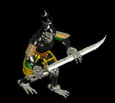 | 鈍器(390) | 牙(260) | 弾(390) | 鎧(220) | 爪(200) | 能力向上1(160) | 双剣(260) | ||
| 地獄の騎士 | アンデット | ボス1 | |||||||
 | 鈍器(470) | ステッキ(310) | 矢(470) | 鎧(260) | 爪(240) | 能力向上1(190) | 魔弾(470) | ||
| デスピンサー | アンデット | ボス1 | |||||||
 | 投擲(470) | 牙(310) | 状態異常回復1(470) | 鎧(260) | 爪(240) | 帰還(190) | 双剣(310) | ||
| リビングメイル | アンデット | 一般2 | |||||||
 | 弓(380) | 片手剣(250) | 盾(380) | 鎧(210) | 手首(190) | 能力向上1(150) | クロー(250) | 銃(380) | |
| 鎧霊 | アンデット | 一般3 | |||||||
 | 弓(360) | 片手剣(240) | 弾(360) | 鎧(200) | 首(180) | 能力向上1(140) | クロー(240) | 銃(360) | |
| 幽霊鎧 | アンデット | 一般4 | |||||||
| 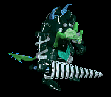 | 弓(300) | 両手剣(200) | 盾(300) | 鎧(170) | 手首(150) | 能力向上1(120) | 鎌(200) | 銃(300) | |
| 守護鎧 | アンデット | セミ1 | |||||||
 | 弓(390) | 片手剣(260) | 盾(390) | 鎧(220) | 首(200) | 能力向上1(160) | クロー(260) | 銃(390) | |
| 幻想鎧 | アンデット | ボス1 | |||||||
 | 弓(470) | 両手剣(310) | 盾(470) | 鎧(260) | 手首(240) | 能力向上2(190) | 鎌(310) | 銃(470) | |
| レッドアイ信奉者 | 人間 | 一般1 | |||||||
| 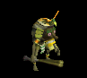 | 笛(410) | 牙(270) | イベント(410) | 鎧(230) | 槍投擲機(210) | 十字架(50) | 双剣(270) | ||
| 斧槍兵 | 人間 | 一般2 | |||||||
 | 槍(380) | 両手剣(250) | 状態異常回復1(380) | 鎧(210) | 手首(190) | 十字架(120) | 鎌(250) | 箒(380) | |
| レッドアイ護衛兵 | 人間 | 一般4 | |||||||
 | 槍(300) | 両手剣(200) | 鍵(20) | 鎧(170) | 手首(150) | 十字架(140) | 鎌(200) | 箒(300) | |
| アベンジャー | 人間 | ボス2 | |||||||
 | 槍(490) | 両手剣(330) | 矢(490) | 鎧(270) | 手首(250) | 十字架(160) | 鎌(330) | 箒(490) | 魔弾(490) |
| エルフ戦士 | 人間 | 一般3 | |||||||
 | 片手剣(360) | 弓(240) | 矢(360) | 鎧(200) | 指輪(180) | 腕刺青(120) | クロー(360) | 銃(240) | 魔弾(360) |
| エルフ騎士 | 人間 | セミ2 | |||||||
 | 片手剣(420) | 槍(280) | 盾(420) | 鎧(230) | 指輪(210) | 腕刺青(150) | クロー(420) | 箒(280) | |
| エルフ王 | 人間 | ボス3 | |||||||
 | 片手剣(510) | 弓(340) | 矢(510) | 鎧(280) | 指輪(260) | 腕刺青(160) | クロー(510) | 銃(340) | 魔弾(510) |
| リザードマン | 悪魔 | 一般1 | |||||||
 | 槍(410) | 両手剣(270) | イベント(410) | 鎧(230) | 槍投擲機(210) | 肩刺青(90) | 鎌(270) | 箒(410) | |
| リザードウォリア | 悪魔 | 一般2 | |||||||
 | 槍(380) | 両手剣(250) | イベント(380) | 鎧(210) | 槍投擲機(190) | 肩刺青(100) | 鎌(250) | 箒(380) | |
| リザードキリング | 悪魔 | 一般3 | |||||||
| 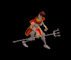 | 槍(360) | 両手剣(240) | イベント(360) | 鎧(200) | 槍投擲機(180) | 肩刺青(110) | 鎌(240) | 箒(360) | |
| ナーガファイター | 悪魔 | セミ1 | |||||||
 | 槍(390) | 両手剣(260) | イベント(390) | 鎧(220) | 槍投擲機(200) | 肩刺青(120) | 鎌(260) | 箒(390) | |
| オーガ | 悪魔 | 一般3 | |||||||
| 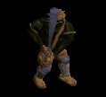 | 鈍器(360) | 杖(240) | イベント(360) | 鎧(200) | イヤリング(180) | 能力向上1(140) | 本(240) | ||
| オーガソルジャー | 悪魔 | 一般4 | |||||||
 | 鈍器(300) | スリング(200) | 弾(300) | 鎧(170) | イヤリング(150) | 能力向上1(120) | |||
| オーガチーフ | 悪魔 | セミ1 | |||||||
| 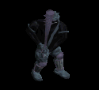 | 鈍器(390) | 杖(260) | 状態異常回復1(390) | 鎧(220) | イヤリング(200) | 能力向上1(160) | 本(260) | ||
| オーガオフィサー | 悪魔 | セミ3 | |||||||
 | ステッキ(450) | 弓(300) | HP回復(450) | 鎧(250) | イヤリング(230) | 能力向上1(180) | 銃(300) | ||
| オーガゼネラル | 悪魔 | ボス2 | |||||||
| 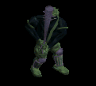 | 鈍器(490) | 杖(330) | 状態異常回復2(120) | 鎧(270) | イヤリング(250) | 能力向上1(200) | 本(330) | ||
| 淡水亀 | 動物 | 一般1 | |||||||
 | ステッキ(410) | 杖(270) | 盾(410) | 鎧(230) | 冠(210) | 能力向上2(160) | 本(270) | ||
| ヒュージタートル | 動物 | 一般2 | |||||||
| 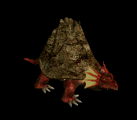 | ステッキ(380) | 杖(250) | 状態異常回復2(100) | 鎧(210) | 冠(190) | 能力向上2(150) | 本(250) | ||
| ビッグシェル | 動物 | 一般3 | |||||||
 | ステッキ(360) | 杖(240) | 盾(360) | 鎧(200) | 冠(180) | 能力向上2(140) | 本(240) | ||
| トライアングル | 動物 | セミ1 | |||||||
 | ステッキ(390) | 杖(260) | CP回復(390) | 鎧(220) | 冠(200) | 能力向上2(160) | 本(260) | ||
| タートルドラゴン | 動物 | ボス1 | |||||||
 | ステッキ(470) | 杖(310) | 盾(470) | 鎧(260) | 冠(240) | 能力向上2(190) | 本(310) | ||
| ポーラーベアー | 動物 | セミ1 | |||||||
 | 両手剣(390) | 鞭(260) | 状態異常回復2(100) | 鎧(220) | イヤリング(200) | 宝石(160) | 鎌(390) | ||
| デスナイトEx | アンデット | セミ1 | |||||||
| 鈍器(450) | 牙(300) | 弾(450) | 鎧(250) | 爪(230) | 能力向上1(180) | 双剣(300) | |||
| 地獄の騎士Ex | アンデット | ボス1 | |||||||
| 鈍器(1200) | ステッキ(800) | 矢(1200) | 鎧(670) | 爪(600) | 能力向上1(480) | 魔弾(1200) | ||
| デスピンサーEx | アンデット | ボス1 | |||||||
| 投擲(1200) | 牙(800) | 状態異常回復1(1200) | 鎧(670) | 爪(600) | 帰還(480) | 双剣(800) | ||
| リビングメイルEx | アンデット | 一般2 | |||||||
| 弓(380) | 片手剣(250) | 盾(380) | 鎧(210) | 手首(190) | 能力向上1(150) | クロー(250) | 銃(380) | |
| 鎧霊Ex | アンデット | 一般3 | |||||||
| 弓(360) | 片手剣(240) | 弾(360) | 鎧(200) | 首(180) | 能力向上1(140) | クロー(240) | 銃(360) | |
| 幽霊鎧Ex | アンデット | 一般4 | |||||||
| 弓(300) | 両手剣(200) | 盾(300) | 鎧(170) | 手首(150) | 能力向上1(120) | 鎌(200) | 銃(300) | ||
| 守護鎧Ex | アンデット | セミ1 | |||||||
| 弓(450) | 片手剣(300) | 盾(450) | 鎧(250) | 首(230) | 能力向上1(180) | クロー(300) | 銃(450) | |
| 幻想鎧Ex | アンデット | ボス1 | |||||||
| 弓(1200) | 両手剣(800) | 盾(1200) | 鎧(670) | 手首(600) | 能力向上2(480) | 鎌(800) | 銃(1200) | |
| レッドアイ信奉者Ex | 人間 | 一般1 | |||||||
| 笛(410) | 牙(270) | イベント(410) | 鎧(230) | 槍投擲機(210) | 十字架(50) | 双剣(270) | |||
| 斧槍兵Ex | 人間 | 一般2 | |||||||
| 槍(380) | 両手剣(250) | 状態異常回復1(380) | 鎧(210) | 手首(190) | 十字架(120) | 鎌(250) | 箒(380) | |
| レッドアイ護衛兵Ex | 人間 | 一般4 | |||||||
| 槍(300) | 両手剣(200) | 鍵(30) | 鎧(170) | 手首(150) | 十字架(140) | 鎌(200) | 箒(300) | |
| アベンジャーEx | 人間 | ボス2 | |||||||
| 槍(2000) | 両手剣(1330) | 矢(2000) | 鎧(1110) | 手首(1000) | 十字架(160) | 鎌(1330) | 箒(2000) | 魔弾(2000) |
| エルフ戦士Ex | 人間 | 一般3 | |||||||
| 片手剣(360) | 弓(240) | 矢(360) | 鎧(200) | 指輪(180) | 腕刺青(120) | クロー(360) | 銃(240) | 魔弾(360) |
| エルフ騎士Ex | 人間 | セミ2 | |||||||
| 片手剣(650) | 槍(430) | 盾(650) | 鎧(360) | 指輪(330) | 腕刺青(150) | クロー(650) | 箒(430) | |
| エルフ王Ex | 人間 | ボス3 | |||||||
| 片手剣(2800) | 弓(1870) | 矢(2800) | 鎧(1560) | 指輪(1400) | 腕刺青(160) | クロー(2800) | 銃(1870) | 魔弾(2800) |
| リザードマンEx | 悪魔 | 一般1 | |||||||
| 槍(410) | 両手剣(270) | イベント(410) | 鎧(230) | 槍投擲機(210) | 肩刺青(90) | 鎌(270) | 箒(410) | |
| リザードウォリアEx | 悪魔 | 一般2 | |||||||
| 槍(380) | 両手剣(250) | イベント(380) | 鎧(210) | 槍投擲機(190) | 肩刺青(100) | 鎌(250) | 箒(380) | |
| キラーリザードEx | 悪魔 | 一般3 | |||||||
| 槍(360) | 両手剣(240) | イベント(360) | 鎧(200) | 槍投擲機(180) | 肩刺青(110) | 鎌(240) | 箒(360) | ||
| ナーガファイタEx | 悪魔 | セミ1 | |||||||
| 槍(450) | 両手剣(300) | イベント(450) | 鎧(250) | 槍投擲機(230) | 肩刺青(120) | 鎌(300) | 箒(450) | |
| オーガEx | 悪魔 | 一般3 | |||||||
| 鈍器(360) | 杖(240) | イベント(360) | 鎧(200) | イヤリング(180) | 能力向上1(140) | 本(240) | |||
| オーガソルジャーEx | 悪魔 | 一般4 | |||||||
| 鈍器(300) | スリング(200) | 弾(300) | 鎧(170) | イヤリング(150) | 能力向上1(120) | |||
| オーガチーフEx | 悪魔 | セミ1 | |||||||
| 鈍器(450) | 杖(300) | 状態異常回復1(450) | 鎧(250) | イヤリング(230) | 能力向上1(180) | 本(300) | |||
| オーガオフィサーEx | 悪魔 | セミ3 | |||||||
| ステッキ(800) | 弓(530) | HP回復(800) | 鎧(440) | イヤリング(400) | 能力向上1(320) | 銃(530) | ||
| オーガゼネラルEx | 悪魔 | ボス2 | |||||||
| 鈍器(2000) | 杖(1330) | 状態異常回復2(500) | 鎧(1110) | イヤリング(1000) | 能力向上1(800) | 本(1330) | |||
| 淡水亀Ex | 動物 | 一般1 | |||||||
| ステッキ(410) | 杖(270) | 盾(410) | 鎧(230) | 冠(210) | 能力向上2(160) | 本(270) | ||
| ヒュージタートルEx | 動物 | 一般2 | |||||||
| ステッキ(380) | 杖(250) | 状態異常回復2(100) | 鎧(210) | 冠(190) | 能力向上2(150) | 本(250) | |||
| ビッグシェルEx | 動物 | 一般3 | |||||||
| ステッキ(360) | 杖(240) | 盾(360) | 鎧(200) | 冠(180) | 能力向上2(140) | 本(240) | ||
| トライアングルEx | 動物 | セミ1 | |||||||
| ステッキ(450) | 杖(300) | CP回復(450) | 鎧(250) | 冠(230) | 能力向上2(180) | 本(300) | ||
| タートルドラゴンEx | 動物 | ボス1 | |||||||
| ステッキ(1200) | 杖(800) | 盾(1200) | 鎧(670) | 冠(600) | 能力向上2(480) | 本(800) | ||
| 北極熊Ex | 動物 | セミ1 | |||||||
| 両手剣(450) | 鞭(300) | 状態異常回復2(110) | 鎧(250) | イヤリング(230) | 宝石(180) | 鎌(450) | ||
| ニックスEx | 神獣 | 一般2 | |||||||
 | 鈍器(380) | 片手剣(250) | 鍵(30) | 鎧(210) | イヤリング(190) | 肩刺青(110) | クロー(250) | ||
| メロウEx | 神獣 | 一般3 | |||||||
| 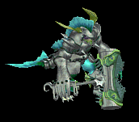 | 鈍器(360) | 片手剣(240) | イベント(360) | 鎧(200) | イヤリング(180) | 肩刺青(120) | クロー(240) | ||
| マーマンEx | 神獣 | 一般4 | |||||||
 | 鈍器(300) | 片手剣(200) | イベント(300) | 鎧(170) | イヤリング(150) | 肩刺青(130) | クロー(200) | ||
| マーマンファイタEx | 神獣 | セミ2 | |||||||
 | 鈍器(650) | 片手剣(430) | イベント(650) | 鎧(360) | イヤリング(330) | 肩刺青(140) | クロー(430) | ||
| トリトンEx | 神獣 | ボス2 | |||||||
 | 鈍器(2000) | 片手剣(1330) | 鍵(210) | 鎧(1110) | イヤリング(1000) | 肩刺青(150) | クロー(1330) | ||
| グリムジョーカーEx | 神獣 | 一般1 | |||||||
 | 槍(410) | 鞭(270) | 盾(410) | 鎧(230) | 指輪(210) | 特殊1(160) | 箒(410) | ||
| ホワイトシャドーEx | 神獣 | セミ2 | |||||||
 | 片手剣(650) | 両手剣(430) | 盾(650) | 鎧(360) | 手首(330) | 特殊1(260) | 鎌(430) | クロー(650) | |
| デスナイトZin | アンデット | セミ1 | |||||||
| 鈍器(650) | 牙(430) | 弾(650) | 鎧(360) | 爪(330) | 能力向上1(260) | 双剣(430) | |||
| 地獄の騎士Zin | アンデット | ボス1 | |||||||
| 鈍器(1000) | ステッキ(670) | 矢(1000) | 鎧(560) | 爪(500) | 能力向上1(400) | 魔弾(1000) | ||
| デスピンサーZin | アンデット | ボス1 | |||||||
| 投擲(1000) | 牙(670) | 状態異常回復1(1000) | 鎧(560) | 爪(500) | 帰還(400) | 双剣(670) | ||
| リビングメイルZin | アンデット | 一般2 | |||||||
| 弓(1380) | 片手剣(920) | 盾(1380) | 鎧(770) | 手首(690) | 能力向上1(550) | クロー(920) | 銃(1380) | |
| 鎧霊Zin | アンデット | 一般3 | |||||||
| 弓(1560) | 片手剣(1040) | 弾(1560) | 鎧(870) | 首(780) | 能力向上1(620) | クロー(1040) | 銃(1560) | |
| 幽霊鎧Zin | アンデット | 一般4 | |||||||
| 弓(1200) | 両手剣(800) | 盾(1200) | 鎧(670) | 手首(600) | 能力向上1(480) | 鎌(800) | 銃(1200) | ||
| 守護鎧Zin | アンデット | セミ1 | |||||||
| 弓(650) | 片手剣(430) | 盾(650) | 鎧(360) | 首(330) | 能力向上1(260) | クロー(430) | 銃(650) | |
| 幻想鎧Zin | アンデット | ボス1 | |||||||
| 弓(1000) | 両手剣(670) | 盾(1000) | 鎧(560) | 手首(500) | 能力向上2(400) | 鎌(670) | 銃(1000) | |
| レッドアイ信奉者Zin | 人間 | 一般1 | |||||||
| 笛(1210) | 牙(810) | イベント(1210) | 鎧(670) | 槍投擲機(610) | 十字架(50) | 双剣(810) | |||
| 斧槍兵Zin | 人間 | 一般2 | |||||||
| 槍(1380) | 両手剣(920) | 状態異常回復1(1380) | 鎧(770) | 手首(690) | 十字架(120) | 鎌(920) | 箒(1380) | |
| レッドアイ護衛兵Zin | 人間 | 一般4 | |||||||
| 槍(1200) | 両手剣(800) | 鍵(70) | 鎧(670) | 手首(600) | 十字架(140) | 鎌(800) | 箒(1200) | |
| アベンジャーZin | 人間 | ボス2 | |||||||
| 槍(1100) | 両手剣(730) | 矢(1100) | 鎧(610) | 手首(550) | 十字架(160) | 鎌(730) | 箒(1100) | 魔弾(1100) |
| エルフ戦士Zin | 人間 | 一般3 | |||||||
| 片手剣(1560) | 弓(1040) | 矢(1560) | 鎧(870) | 指輪(780) | 腕刺青(120) | クロー(1560) | 銃(1040) | 魔弾(1560) |
| エルフ騎士Zin | 人間 | セミ2 | |||||||
| 片手剣(750) | 槍(500) | 盾(750) | 鎧(420) | 指輪(380) | 腕刺青(150) | クロー(750) | 箒(500) | |
| エルフ王Zin | 人間 | ボス3 | |||||||
| 片手剣(1200) | 弓(800) | 矢(1200) | 鎧(670) | 指輪(600) | 腕刺青(160) | クロー(1200) | 銃(800) | 魔弾(1200) |
| リザードマンZin | 悪魔 | 一般1 | |||||||
| 槍(1210) | 両手剣(810) | イベント(1210) | 鎧(670) | 槍投擲機(610) | 肩刺青(90) | 鎌(810) | 箒(1210) | |
| リザードウォリアZin | 悪魔 | 一般2 | |||||||
| 槍(1380) | 両手剣(920) | イベント(1380) | 鎧(770) | 槍投擲機(690) | 肩刺青(100) | 鎌(920) | 箒(1380) | |
| リザードキリングZin | 悪魔 | 一般3 | |||||||
| 槍(1560) | 両手剣(1040) | イベント(1560) | 鎧(870) | 槍投擲機(780) | 肩刺青(110) | 鎌(1040) | 箒(1560) | ||
| ナーガファイターZin | 悪魔 | セミ1 | |||||||
| 槍(650) | 両手剣(430) | イベント(650) | 鎧(360) | 槍投擲機(330) | 肩刺青(120) | 鎌(430) | 箒(650) | |
| オーガZin | 悪魔 | 一般3 | |||||||
| 鈍器(1560) | 杖(1040) | イベント(1560) | 鎧(870) | イヤリング(780) | 能力向上1(620) | 本(1040) | |||
| オーガソルジャーZin | 悪魔 | 一般4 | |||||||
| 鈍器(1200) | スリング(800) | 弾(1200) | 鎧(670) | イヤリング(600) | 能力向上1(480) | |||
| オーガチーフZin | 悪魔 | セミ1 | |||||||
| 鈍器(650) | 杖(430) | 状態異常回復1(650) | 鎧(360) | イヤリング(330) | 能力向上1(260) | 本(430) | |||
| オーガオフィサーZin | 悪魔 | セミ3 | |||||||
| ステッキ(900) | 弓(600) | HP回復(900) | 鎧(500) | イヤリング(450) | 能力向上1(360) | 銃(600) | ||
| オーガゼネラルZin | 悪魔 | ボス2 | |||||||
| 鈍器(1100) | 杖(730) | 状態異常回復2(280) | 鎧(610) | イヤリング(550) | 能力向上1(440) | 本(730) | |||
| 淡水亀Zin | 動物 | 一般1 | |||||||
| ステッキ(1210) | 杖(810) | 盾(1210) | 鎧(670) | 冠(610) | 能力向上2(480) | 本(810) | ||
| ヒュージタートルZin | 動物 | 一般2 | |||||||
| ステッキ(1380) | 杖(920) | 状態異常回復2(350) | 鎧(770) | 冠(690) | 能力向上2(550) | 本(920) | |||
| ビッグシェルZin | 動物 | 一般3 | |||||||
| ステッキ(1560) | 杖(1040) | 盾(1560) | 鎧(870) | 冠(780) | 能力向上2(620) | 本(1040) | ||
| トライアングルZin | 動物 | セミ1 | |||||||
| ステッキ(650) | 杖(430) | CP回復(650) | 鎧(360) | 冠(330) | 能力向上2(260) | 本(430) | ||
| タートルドラゴンZin | 動物 | ボス1 | |||||||
| ステッキ(1000) | 杖(670) | 盾(1000) | 鎧(560) | 冠(500) | 能力向上2(400) | 本(670) | ||
| 北極熊Zin | 動物 | セミ1 | |||||||
| 両手剣(650) | 鞭(430) | 状態異常回復2(160) | 鎧(360) | イヤリング(330) | 宝石(260) | 鎌(650) | ||
| ニックスZin | 神獣 | 一般2 | |||||||
| 鈍器(1380) | 片手剣(920) | 鍵(70) | 鎧(770) | イヤリング(690) | 肩刺青(110) | クロー(920) | ||
| メロウZin | 神獣 | 一般3 | |||||||
| 鈍器(1560) | 片手剣(1040) | イベント(1560) | 鎧(870) | イヤリング(780) | 肩刺青(120) | クロー(1040) | |||
| マーマンZin | 神獣 | 一般4 | |||||||
| 鈍器(1200) | 片手剣(800) | イベント(1200) | 鎧(670) | イヤリング(600) | 肩刺青(130) | クロー(800) | ||
| マーマンファイタZin | 神獣 | セミ2 | |||||||
| 鈍器(750) | 片手剣(500) | イベント(750) | 鎧(420) | イヤリング(380) | 肩刺青(140) | クロー(500) | ||
| トリトンZin | 神獣 | ボス2 | |||||||
| 鈍器(1100) | 片手剣(730) | 鍵(110) | 鎧(610) | イヤリング(550) | 肩刺青(150) | クロー(730) | ||
| グリムジョーカーZin | 神獣 | 一般1 | |||||||
| 槍(1210) | 鞭(810) | 盾(1210) | 鎧(670) | 指輪(610) | 特殊1(480) | 箒(1210) | ||
| ホワイトシャドーZin | 神獣 | セミ2 | |||||||
| 片手剣(750) | 両手剣(500) | 盾(750) | 鎧(420) | 手首(380) | 特殊1(300) | 鎌(500) | クロー(750) | |
 | 弓(1560) | 片手剣(1040) | 矢(1560) | グローブ(900) | 手首(780) | 腕刺青(170) | クロー(1040) | 銃(1560) | 魔弾(1560) |
| シーク信者(踊り子) Zin | 人間 | 一般3 | |||||||
 | 鎧(70) | ブローチ(200) | 弾(130) | 十字架(100) | 腰(30) | 翼(40) | 水晶(40) | ||
| シーク信者(踊り子)2 Zin | 人間 | セミ3 | |||||||
 | 鎧(180) | 首(530) | スリング(350) | 鎧(280) | 腰(70) | 翼(110) | 水晶(110) | ||
| シーク信者(踊り子)3 Zin | 人間 | ボス2 | |||||||
 | 鎧(450) | 首(1350) | CP回復(900) | 手首(720) | 腰(180) | 翼(270) | 水晶(270) | ||
| シーク信者(踊り子)4 Zin | 人間 | ボス3 | |||||||
 | 鎧(600) | 首(1800) | スリング(1200) | 手首(960) | 腰(240) | 翼(360) | 水晶(360) | ||
| シーク守護者 Zin | 人間 | 一般4 | |||||||
 | 鎧(50) | 首(150) | 帰還(100) | マント(80) | 腕刺青(20) | 翼(30) | 水晶(30) | ||
| シーク守護者2 Zin | 人間 | セミ3 | |||||||
 | 鍵(180) | 状態異常回復2(530) | スリング(350) | 鎧(280) | 腰(70) | 翼(110) | 水晶(110) | ||
| シーク守護者3 Zin | 人間 | ボス2 | |||||||
| 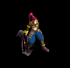 | 鎧(450) | 首(1350) | 杖(900) | 手首(720) | 両手剣(180) | HP回復(270) | 鎌(180) | 本(900) | |
| シーク守護者4 Zin | 人間 | ボス3 | |||||||
 | 鎧(600) | ブローチ(1800) | スリング(1200) | 手首(960) | 腰(240) | 翼(360) | 水晶(360) | ||
| シーク天使 Zin | 人間 | 一般3 | |||||||
 | 鎧(70) | 首(200) | 帰還(130) | 手首(100) | 腰(30) | 翼(40) | 水晶(40) | ||
| シーク天使1 Zin | 人間 | セミ1 | |||||||
 | 鎧(90) | 首(260) | スリング(180) | 手首(140) | 腰(40) | 翼(50) | 水晶(50) | ||
| シーク天使3 Zin | 人間 | ボス2 | |||||||
 | 鎧(450) | ブローチ(1350) | スリング(900) | 手首(720) | 腰(180) | 翼(270) | 水晶(270) | ||
| シーク天使4 Zin | 人間 | ボス3 | |||||||
 | 鎧(600) | 首(1800) | 腕刺青(1200) | 手首(960) | 腰(240) | 翼(360) | 水晶(360) | ||
| 魔女 Zin | 悪魔 | 一般3 | |||||||
 | 鎧(170) | イヤリング(210) | 足(90) | 十字架(50) | ステッキ(30) | 盾(10) | |||
| 魔女1 Zin | 悪魔 | セミ1 | |||||||
 | 鎧(230) | ブローチ(280) | CP回復(120) | 笛(70) | ステッキ(40) | イベント(20) | |||
| 魔女3 Zin | 悪魔 | ボス2 | |||||||
 | 鎧(1170) | イヤリング(1440) | 足(590) | 十字架(360) | ステッキ(180) | 盾(90) | |||
| 魔女4 Zin | 悪魔 | ボス3 | |||||||
| 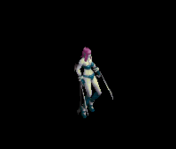 | 鎧(1560) | イヤリング(1920) | 帰還(790) | 笛(480) | 状態異常回復1(240) | HP回復(120) | |||
| サキュバス Zin | 悪魔 | 一般4 | |||||||
 | 鎧(130) | ブローチ(160) | 弾(70) | 笛(40) | ステッキ(20) | HP回復(10) | |||
| サキュバス1 Zin | 悪魔 | セミ1 | |||||||
 | 鎧(230) | イヤリング(280) | 足(120) | 能力向上1(70) | ステッキ(40) | 盾(20) | |||
| サキュバス3 Zin | 悪魔 | ボス2 | |||||||
 | 鎧(1170) | 状態異常回復2(1440) | 足(590) | 笛(360) | ステッキ(180) | CP回復(90) | |||
| パンタズドリーム Zin | 悪魔 | セミ1 | |||||||
 | 鎧(230) | ブローチ(280) | 足(120) | 笛(70) | ステッキ(40) | 杖(20) | 本(20) | ||
| パンタズドリーム2 Zin | 悪魔 | セミ3 | |||||||
 | 鎧(460) | イヤリング(560) | 足(230) | 笛(140) | 状態異常回復1(70) | イベント(40) | |||
| パンタズドリーム3 Zin | 悪魔 | ボス1 | |||||||
 | 鎧(650) | イヤリング(800) | 腕刺青(330) | 能力向上1(200) | ステッキ(100) | 盾(50) | |||
| パンタズドリーム4 Zin | 悪魔 | ボス3 | |||||||
| 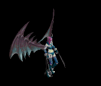 | 鎧(1560) | イヤリング(1920) | 足(790) | 笛(480) | 状態異常回復1(240) | 盾(120) | |||
| 蛙2 Zin | 動物 | セミ3 | |||||||
 | 投擲(250) | 状態異常回復2(180) | 足(140) | 鎧(110) | 槍投擲機(70) | 杖(40) | 本(40) | ||
| ユニコーン1 Zin | 神獣 | セミ1 | |||||||
 | 冠(160) | マント(230) | 牙(120) | 鎧(20) | 肩刺青(40) | HP回復(90) | 双剣(120) | ||
| 使徒 Zin | 神獣 | 一般3 | |||||||
| 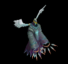 | 鎧(120) | 鈍器(170) | 腕刺青(90) | 笛(10) | 肩刺青(30) | HP回復(70) | |||
| 使徒2 Zin | 神獣 | ボス1 | |||||||
 | 鎧(450) | 状態異常回復2(650) | 腕刺青(350) | 能力向上1(50) | 矢(100) | 盾(250) | 魔弾(100) | ||
| 使徒3 Zin | 神獣 | ボス2 | |||||||
 | 鎧(810) | 鈍器(1170) | スリング(630) | 笛(90) | 矢(180) | イベント(450) | 魔弾(180) | ||
| 使徒4 Zin | 神獣 | ボス3 | |||||||
 | 鎧(1080) | ブローチ(1560) | スリング(840) | 笛(120) | 状態異常回復1(240) | 盾(600) | |||
| 審判官1 Zin | 神獣 | セミ2 | |||||||
 | 鎧(250) | 状態異常回復2(360) | スリング(190) | 笛(30) | 肩刺青(60) | 盾(140) | |||
| 審判官3 Zin | 神獣 | ボス2 | |||||||
 | 鎧(810) | ブローチ(1170) | スリング(630) | 笛(90) | 腕刺青(180) | 盾(450) | |||
| ウィークネス天使 Zin | 神獣 | セミ1 | |||||||
| 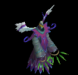 | 鎧(160) | 鈍器(230) | スリング(120) | 笛(20) | 状態異常回復1(40) | 盾(90) | |||
| ウィークネス天使2 Zin | 神獣 | セミ3 | |||||||
 | 鎧(320) | 鈍器(460) | 腕刺青(250) | 十字架(40) | 状態異常回復1(70) | 盾(180) | |||
| ウィークネス天使3 Zin | 神獣 | ボス1 | |||||||
 | 鎧(450) | 鈍器(650) | スリング(350) | 笛(50) | 矢(100) | 盾(250) | 魔弾(100) | ||
| ウィークネス天使4 Zin | 神獣 | ボス3 | |||||||
 | 鎧(1080) | 鈍器(1560) | スリング(840) | 笛(120) | 矢(240) | 肩刺青(600) | 魔弾(240) | ||
| ワニ亀 | 動物 | 一般1 | |||||||
| ステッキ(410) | 杖(270) | 盾(410) | 鎧(230) | 冠(210) | 能力向上2(160) | 本(270) | ||
| 象亀 | 動物 | 一般2 | |||||||
| ステッキ(380) | 杖(250) | 状態異常回復2(100) | 鎧(210) | 冠(190) | 能力向上2(150) | 本(250) | |||
| 鎧亀 | 動物 | 一般3 | |||||||
| ステッキ(360) | 杖(240) | 盾(360) | 鎧(200) | 冠(180) | 能力向上2(140) | 本(240) | ||
| 神秘の亀 | 動物 | セミ1 | |||||||
| ステッキ(390) | 杖(260) | CP回復(390) | 鎧(220) | 冠(200) | 能力向上2(160) | 本(260) | ||
| 竜王亀 | 動物 | ボス1 | |||||||
| ステッキ(470) | 杖(310) | 盾(470) | 鎧(260) | 冠(240) | 能力向上2(190) | 本(310) | ||
| ワニ亀 Ex | 動物 | 一般1 | |||||||
| ステッキ(410) | 杖(270) | 盾(410) | 鎧(230) | 冠(210) | 能力向上2(160) | 本(270) | ||
| 象亀 Ex | 動物 | 一般2 | |||||||
| ステッキ(380) | 杖(250) | 状態異常回復2(100) | 鎧(210) | 冠(190) | 能力向上2(150) | 本(250) | |||
| 鎧亀 Ex | 動物 | 一般3 | |||||||
| ステッキ(360) | 杖(240) | 盾(360) | 鎧(200) | 冠(180) | 能力向上2(140) | 本(240) | ||
| 神秘の亀 Ex | 動物 | セミ1 | |||||||
| ステッキ(450) | 杖(300) | CP回復(450) | 鎧(250) | 冠(230) | 能力向上2(180) | 本(300) | ||
| 竜王亀 Ex | 動物 | ボス1 | |||||||
| ステッキ(1200) | 杖(800) | 盾(1200) | 鎧(670) | 冠(600) | 能力向上2(480) | 本(800) | ||
| ブルーニックス Ex | 神獣 | 一般2 | |||||||
| 鈍器(380) | 片手剣(250) | 鍵(30) | 鎧(210) | イヤリング(190) | 肩刺青(110) | クロー(250) | ||
| ブルーメロウ Ex | 神獣 | 一般3 | |||||||
| 鈍器(360) | 片手剣(240) | イベント(360) | 鎧(200) | イヤリング(180) | 肩刺青(120) | クロー(240) | |||
| ブルーマーマン Ex | 神獣 | 一般4 | |||||||
| 鈍器(300) | 片手剣(200) | イベント(300) | 鎧(170) | イヤリング(150) | 肩刺青(130) | クロー(200) | ||
| マーマンウォリア Ex | 神獣 | セミ2 | |||||||
| 鈍器(650) | 片手剣(430) | イベント(650) | 鎧(360) | イヤリング(330) | 肩刺青(140) | クロー(430) | ||
| ポセイドン Ex | 神獣 | ボス2 | |||||||
| 鈍器(2000) | 片手剣(1330) | 鍵(210) | 鎧(1110) | イヤリング(1000) | 肩刺青(150) | クロー(1330) | ||
| 時の旅人 Zin | 人間 | 一般4 | |||||||
| 鎧(70) | ブローチ(200) | 弾(130) | 十字架(100) | 腰(30) | 翼(40) | 水晶(40) | ||
| サキュバス Zin | 悪魔 | 一般4 | |||||||
| 鎧(130) | ブローチ(160) | 弾(70) | 笛(40) | ステッキ(20) | HP回復(10) | |||
| サキュバス Zin | 悪魔 | 一般4 | |||||||
| 鎧(130) | ブローチ(160) | 弾(70) | 笛(40) | ステッキ(20) | HP回復(10) | |||
| 時の旅人 Zin | 人間 | 一般4 | |||||||
| 鎧(70) | ブローチ(200) | 弾(130) | 十字架(100) | 腰(30) | 翼(40) | 水晶(40) | ||
| フィクサー Zin | 悪魔 | ボス3 | |||||||
| 鎧(1560) | イヤリング(1920) | 足(790) | 笛(480) | 状態異常回復1(240) | 盾(120) | ||||
| 鎧霊Ev | アンデット | 一般3 | |||||||
| 弓(1560) | 片手剣(1040) | 弾(1560) | 鎧(870) | 首(780) | 能力向上1(620) | クロー(1040) | 銃(1560) | |
| オーガEv | 悪魔 | 一般3 | |||||||
| 鈍器(1560) | 杖(1040) | イベント(1560) | 鎧(870) | イヤリング(780) | 能力向上1(620) | 本(1040) | |||
| ビッグシェルEv | 動物 | 一般3 | |||||||
| ステッキ(1560) | 杖(1040) | 盾(1560) | 鎧(870) | 冠(780) | 能力向上2(620) | 本(1040) | ||
| エルフ戦士Ev | 人間 | 一般3 | |||||||
| 片手剣(1560) | 弓(1040) | 矢(1560) | 鎧(870) | 指輪(780) | 腕刺青(120) | クロー(1560) | 銃(1040) | 魔弾(1560) |
| リザードキリングEv | 悪魔 | 一般3 | |||||||
| 槍(1560) | 両手剣(1040) | イベント(1560) | 鎧(870) | 槍投擲機(780) | 肩刺青(110) | 鎌(1040) | 箒(1560) | ||
| メロウEv | 神獣 | 一般3 | |||||||
| 鈍器(1560) | 片手剣(1040) | イベント(1560) | 鎧(870) | イヤリング(780) | 肩刺青(120) | クロー(1040) | |||
| マーマンEv | 神獣 | 一般4 | |||||||
| 鈍器(1200) | 片手剣(800) | イベント(1200) | 鎧(670) | イヤリング(600) | 肩刺青(130) | クロー(800) | ||
| レッドアイ護衛兵Ev | 人間 | 一般4 | |||||||
| 槍(1200) | 両手剣(800) | 鍵(70) | 鎧(670) | 手首(600) | 十字架(140) | 鎌(800) | 箒(1200) | |
| オーガソルジャーEv | 悪魔 | 一般4 | |||||||
| 鈍器(1200) | スリング(800) | 弾(1200) | 鎧(670) | イヤリング(600) | 能力向上1(480) | |||
| 幽霊鎧Ev | アンデット | 一般4 | |||||||
| 弓(1200) | 両手剣(800) | 盾(1200) | 鎧(670) | 手首(600) | 能力向上1(480) | 鎌(800) | 銃(1200) | ||
| トライアングルEv | 動物 | セミ1 | |||||||
| ステッキ(650) | 杖(430) | CP回復(650) | 鎧(360) | 冠(330) | 能力向上2(260) | 本(430) | ||
| 地獄の騎士Ev | アンデット | ボス1 | |||||||
| 鈍器(1000) | ステッキ(670) | 矢(1000) | 鎧(560) | 爪(500) | 能力向上1(400) | 魔弾(1000) | ||
| 斧槍兵Sp | 人間 | 一般4 | |||||||
 | 槍(1400) | 両手剣(900) | 状態異常回復1(1400) | 鎧(800) | 手首(700) | 十字架(100) | 鎌(900) | 箒(1400) | |
| サキュバスSp | 悪魔 | セミ1 | |||||||
| 鎧(1200) | ブローチ(500) | 弾(700) | 笛(600) | 職業鎧(500) | HP回復(100) | |||
| ウィークネス天使3 Sp | 神獣 | セミ1 | |||||||
| 鎧(750) | 鈍器(1000) | スリング(600) | 笛(500) | 矢(700) | 盾(800) | 魔弾(700) | ||
| 淡水亀Sp | 動物 | 一般4 | |||||||
| ステッキ(700) | 杖(600) | 盾(500) | 鎧(900) | 冠(500) | 能力向上2(400) | 本(700) | ||
| リザードマンSp | 悪魔 | 一般4 | |||||||
| 槍(1210) | 両手剣(810) | イベント(1210) | 鎧(670) | 槍投擲機(610) | 肩刺青(90) | 鎌(810) | 箒(1210) | |
| サキュバス3 Sp | 悪魔 | セミ1 | |||||||
| 鎧(1200) | ブローチ(500) | 弾(700) | 笛(600) | 職業鎧(500) | HP回復(100) | |||
| テンプラーSp | 人間 | 一般4 | |||||||
 | 槍(1400) | 両手剣(900) | 状態異常回復1(1400) | 鎧(800) | 手首(700) | 十字架(100) | 鎌(900) | 箒(1400) | |
| 覚醒サキュバスZin | 悪魔 | セミ1 | |||||||
 | 鎧(130) | ブローチ(160) | 弾(70) | 笛(40) | ステッキ(20) | HP回復(10) | |||
| 踊り子 Sp | 人間 | 一般4 | |||||||
| 鎧(70) | ブローチ(200) | 弾(130) | 十字架(100) | 腰(30) | 翼(40) | 水晶(40) |